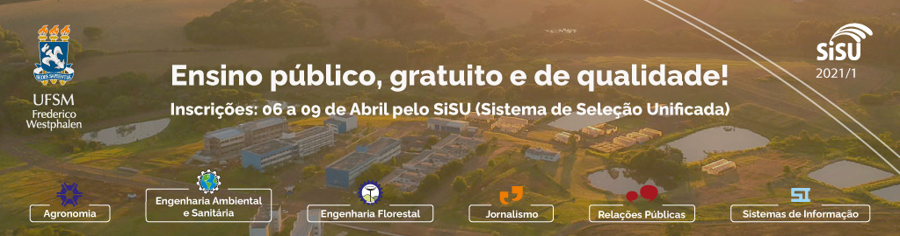

O curso de Sistemas de Informação está localizado em Campus Frederico Westphalen na modalidade Bacharelado Presencial sendo Noturno o seu turno de funcionamento. A área de conhecimento do curso é classificada como CIÊNCIAS EXATAS E DA TERRA. Atualmente, a coordenação é de responsabilidade de ADRIANA SOARES PEREIRA, a coordenação substituta de SOLANGE DE LURDES PERTILE e a secretaria de CLAUDIOSIR ROQUE DOS SANTOS.
O curso é ofertado em período Semestral, sendo 9 o número de períodos indicados para sua conclusão. Reconhecido pela Portaria n. 71/2015/MEC, publicada no DOU, de 30/01/2015.
Tendo em mente a flexibilização do ensino, e a indissociabilidade entre ensino, pesquisa e extensão, o objetivo geral do Curso Sistemas de Informação - Bacharelado (Noturno) é formar profissionais de nível superior com domínio e capacidade para trabalhar na área da Computação, desenvolvendo projetos de software e serviços de computação e informação, atentos ao caráter ecológico, social, ético e responsável no exercício de suas atividades na sociedade.
Especificamente, o Curso de Sistemas de Informação - Bacharelado (Noturno) orienta-se pelos seguintes objetivos:
a) formar profissionais com capacidade de:
b) desenvolver conhecimentos e habilidades humanas, sociais e gerenciais que habilitem o profissional a compreender o impacto da tecnologia no arranjo social de modo a assumir uma atitude consciente e pró-ativa, utilizando a tecnologia de informação como ferramenta para a otimização de processos nas organizações e transformação social.
Segundo o indicativo das Diretrizes Curriculares de Cursos da Área de Computação e Informática (Parecer CNE/CES 136/2012) é possível identificar duas grandes áreas de atuação dos profissionais de Sistemas de Informação:
Logo, a atuação seguintes dimensões: do Bacharel em Sistemas de Informação desenvolve-se nas
Essas dimensões normalmente não formam áreas estanques, mas interpenetram-se, ou seja, não existem carreiras “puras”. O desenvolvedor de software precisa ser capaz de atuar em infraestrutura e ter conhecimento de gestão de TI, o que ocorre de maneira recíproca nas outras carreiras. Podemos entender antes essas diferentes dimensões como diferentes potenciais que se realizam na prática em graus diferentes conforme a escolha e a dinâmica da carreira de cada um. De acordo com o perfil profissional traçado, o egresso do Curso de Sistemas da Informação – Bacharelado (Noturno) deve estar apto a desenvolver as seguintes funções no mercado de trabalho:
Entende-se que a formação do aluno de graduação em Sistemas de Informação Bacharelado (Noturno) se dá a partir da sua entrada na Universidade e continua, permanentemente, durante o curso e posterior a ele. Este profissional deve estar em consonância com os princípios propostos para a educação no século XXI: aprender a conhecer, aprender a fazer, aprender a conviver e aprender a ser.
O Bacharel em Sistemas de Informação é o profissional que usa conceitos e técnicas de informática e teoria de sistemas para contribuir na solução de problemas de tratamento da informação nas organizações por meio da construção de modelos de automação corporativa. Ele deve ter espírito empreendedor que lhe permita conceber, criar e concretizar projetos de tratamento da informação, consciente da sua função na sociedade e de acordo com valores éticos.
Do egresso de um Curso de Sistemas de Informação - Bacharelado (Noturno) é exigida uma predisposição e aptidões para a área, além de um conjunto de competências, habilidades e atitudes a serem adquiridas durante a realização do curso [SBC, Anais do III Curso de Qualidade, p.397, 2001]. Neste sentido, este capítulo define o perfil profissional desejado (seção 1), descreve os requisitos psicofísicos que devem ser trabalhados ao longo do curso (seção 2); e relaciona as classes de problemas que todo egresso deve estar apto a resolver (seção 3). As principais áreas de atuação são relacionadas no próximo capítulo.
Acese o curriculo completo do curso clicando aqui.
UFSM-FW equipa laboratórios de informática com 60 novos computadores...
Saiba mais...Pesquisa sobre predição de evasão no curso de Sistemas de Informação da UFSM-FW não sofre alteração em seu andamento durante a pandemia de COVID-19...
Saiba mais...